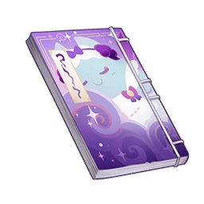

Inazuma · Books & Literature
Glimpses of Mysterious Inazuma
A two-volume Inazuman folk-tale collection framed as transcriptions by a traveling writer from Fontaine, with a tragic romance and a comic baku story.

Collection, narrator, and release
Glimpses of Mysterious Inazuma is a two-volume Inazuman book collection. Both item descriptions call it a gathering of oral myths transcribed by a traveling writer from Fontaine. The in-game description does not name that narrator, so the safest attribution is the description itself rather than a guessed biography. The collection first appeared at the Enchanted Tales of the Mikawa Festival in Version 5.4; the festival was the books’ distribution venue, not the setting of either tale.
Each volume pairs a folk tale with a conversation about how to judge it. The outside narrator and a friend compare the stories with Fontainian and Liyue storytelling conventions, while a distinct voice in the frame offers an Inazuman reading. These exchanges are part of the book’s perspective, not an authoritative key identifying every character or allegory.
Volume I: The Mysterious Maiden of Genbou
The first story follows Takehiko, an official who falls in love with Sayohime, the daughter of Emon no Kami, Chief of the Gate Guard. They pledge themselves to each other, but Takehiko leaves to fight a rebellion under the Shogunate. Sayohime hears a rumor that the army has been defeated, becomes ill with grief, and dies before he returns.
The tale says that Sayohime is corrupted by the Abyss and returns as a demon. Takehiko is terrified and runs away rather than face her. After using magic learned from a bake-danuki to hide inside a stone on Mt. Yougou, he is exposed when the hand mirror he gave Sayohime reflects the stone. Sayohime embraces it and becomes a ball of flame, consuming them both.
The framing conversation debates Takehiko’s failure. The Fontanian narrator measures the romance against opera lovers who choose death together and says Takehiko did not truly love Sayohime. The other speaker says Inazumans call him a coward because he fled the Abyss-corrupted Sayohime and failed to help her, not simply because he did not die alongside her. This distinction is the text’s own discussion of cultural values, not a rule that every Inazuman should behave the same way.
The narrator says the story may have been inspired by an unnamed Liyue novel about lovers separated by interference, with the woman transformed into a monster and imprisoned beneath a stone. Neither the novel nor its characters are identified. Sayohime is not linked in the text to a known Inazuman historical figure, and her Abyssal transformation belongs to this folk tale rather than a documented event.
Volume II: The Yumekui-Baku
The second story opens with a poor but kind elderly couple living near Konda Village. While gathering firewood, the old man frees what he believes is a young wild boar caught in a trap. Later, a young woman arrives at their home seeking shelter. They take her in, and she stays as their daughter. Her pastries sell well among wealthy merchants, easing the couple’s poverty.
One night, the couple discover that their daughter’s true form is the small beast they rescued. She uses her snout to catch nightmares floating in the air and turns them into pastries. She explains that she is a baku—or, more precisely, a “mo” from Liyue—and that she took human form to repay the couple’s kindness. She says that her mistress, who oversees countless sweet dreams and nightmares, may punish her for revealing this secret. The mistress is not named in the book.
The humor comes from the old man’s persistent insistence that she is still their daughter, whether she is a person, wild boar, or baku, while she repeatedly corrects his terminology. The story ends happily, with the couple and their daughter living in comfort. It is a warm folktale, not a historical account of Konda Village or evidence that a named present-day character was the baku’s mistress.
Folklore, species, and later sources
Both volumes use familiar setting details—Inazuman offices and the Shogunate, the Abyss, bake-danuki, Konda Village, and a dream-eating baku—but the collection labels them as oral folk stories. The volume itself leaves open the Liyue story behind Takehiko and Sayohime, the identity of the baku’s mistress, and the relationship between the tale’s “baku” and “mo” terms.
Later in-game material about Yumemizuki Mizuki and yumekui-baku can establish that the species consumes dreams and nightmares. That later lore is useful context for the pastry story, but it does not confirm the folk tale’s old couple or unnamed mistress as real people. The book’s stories should remain stories unless another source independently makes a connection.
This is an original CoreGG reading guide, not an official HoYoverse article or a reproduction of the game text. Source links below identify the records used so you can check the original context.
Sources & references
Check these sources for the original game text and reference trail.